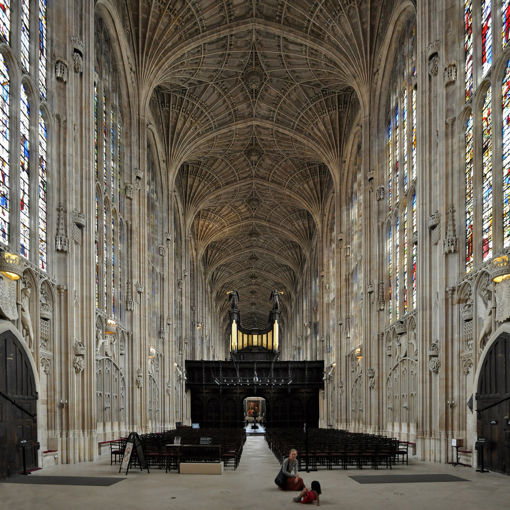
Gótico Neo-Victoriano
Catedrales imposibles, filigranas, arquitectura monumental y una elegancia oscura que parece resistirse al paso del tiempo.
Ilustración editorial · mundos extraordinarios
Donde la elegancia victoriana se encuentra con las ruinas del mañana.
Soy Damián Vesper. Transformo historias en universos visuales, creando portadas e ilustraciones para novelas que habitan entre el vapor, el óxido y la oscuridad.
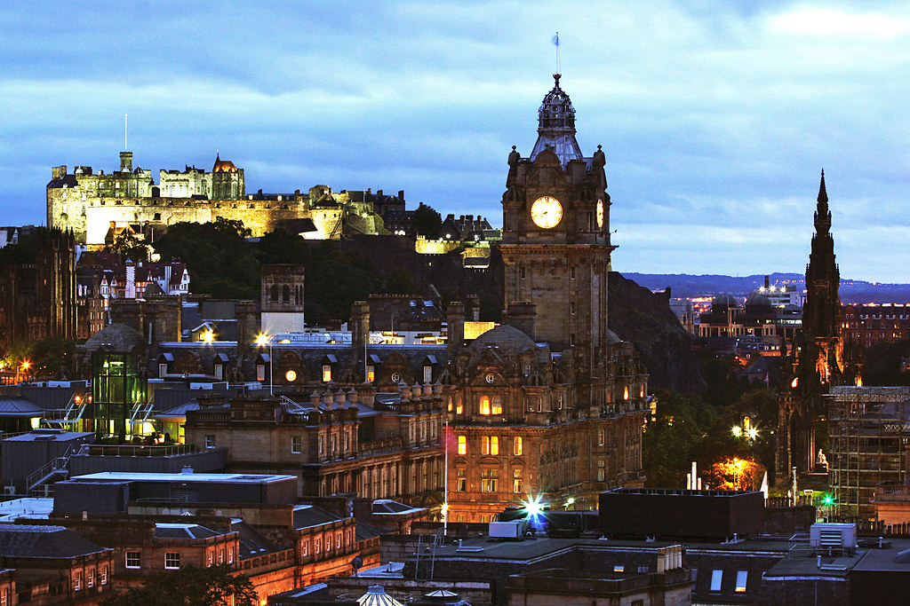
Manifiesto · El arte después del colapso
Creo en las historias que no temen explorar la oscuridad. En las ciudades que conservan su grandeza bajo toneladas de ceniza. En las máquinas que siguen respirando cuando la humanidad parece haber olvidado cómo hacerlo.
Mi trabajo nace de una obsesión: dar forma a lo imposible. Cada trazo, cada textura y cada sombra buscan abrir una puerta hacia mundos que todavía no existen, pero que merecen ser descubiertos.
No dibujo el fin del mundo. Ilustro lo que viene después.
Sobre mí · El creador detrás de las sombras
Soy Damián Vesper, diseñador gráfico e ilustrador especializado en la creación de universos visuales para literatura fantástica, distópica y de ciencia ficción.
Mi lenguaje artístico combina la elegancia ornamental de la época victoriana, la crudeza de la maquinaria industrial y la fuerza expresiva del arte urbano contemporáneo.
Entiendo cada portada como una promesa al lector: una pequeña ventana hacia el universo que descubrirá al abrir el libro.
Mi objetivo no es decorar historias, sino darles una identidad visual inolvidable.
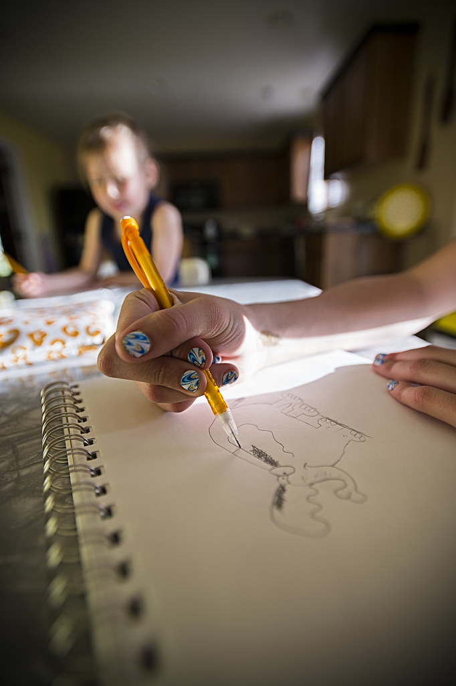
Mi universo visual · Tres mundos, una identidad

Catedrales imposibles, filigranas, arquitectura monumental y una elegancia oscura que parece resistirse al paso del tiempo.
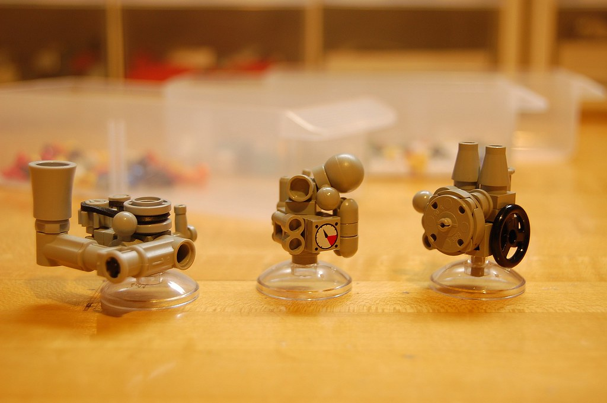
Engranajes, calderas, maquinaria de vapor y mecanismos de supervivencia que cuentan historias de civilizaciones reconstruidas.
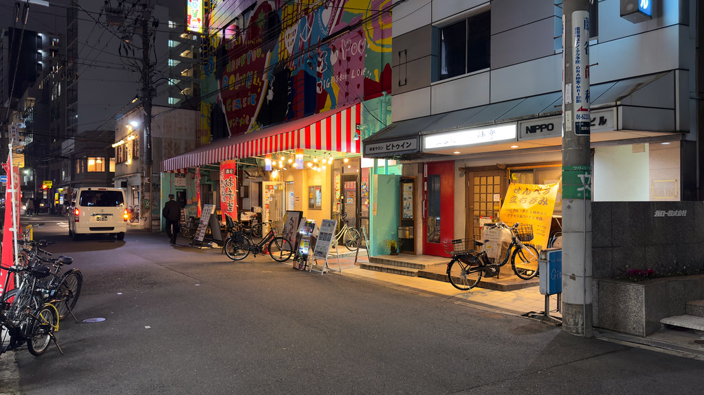
Ciudades cubiertas de grafitis, calles abandonadas, propaganda desgastada y destellos de neón entre las sombras.
Especialidades · Lo que puedo crear
Cubiertas que condensan la esencia de una historia y despiertan la curiosidad antes de abrir el libro.
Escenas, personajes y escenarios que acompañan la lectura y enriquecen la experiencia narrativa.
Cartografías, ciudades y territorios imaginarios que dan coherencia visual a universos literarios.
Sistemas visuales consistentes que conectan portadas, símbolos, títulos y elementos promocionales.
Portafolio · Obras del otro mundo
Cada ilustración es una historia detenida en el tiempo. Explora una selección de conceptos artísticos y proyectos editoriales imaginarios.
Las obras de esta selección son conceptos ficticios y editables, no encargos reales.
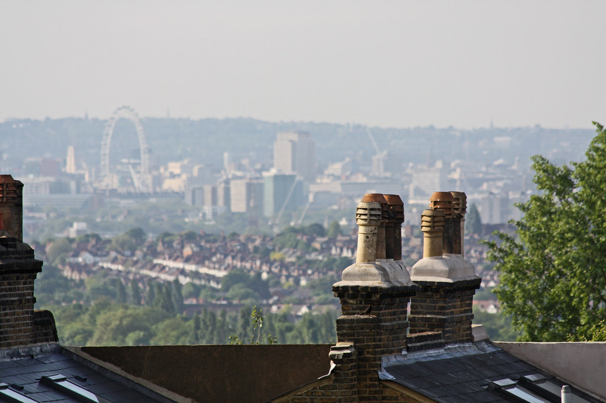
Portada de novela distópica
Una metrópolis victoriana donde las chimeneas nunca dejaron de arder.
Concepto ficticio; fotografía: Crystal Palace High Street, Gareth1953 All Right Now, CC BY 2.0.
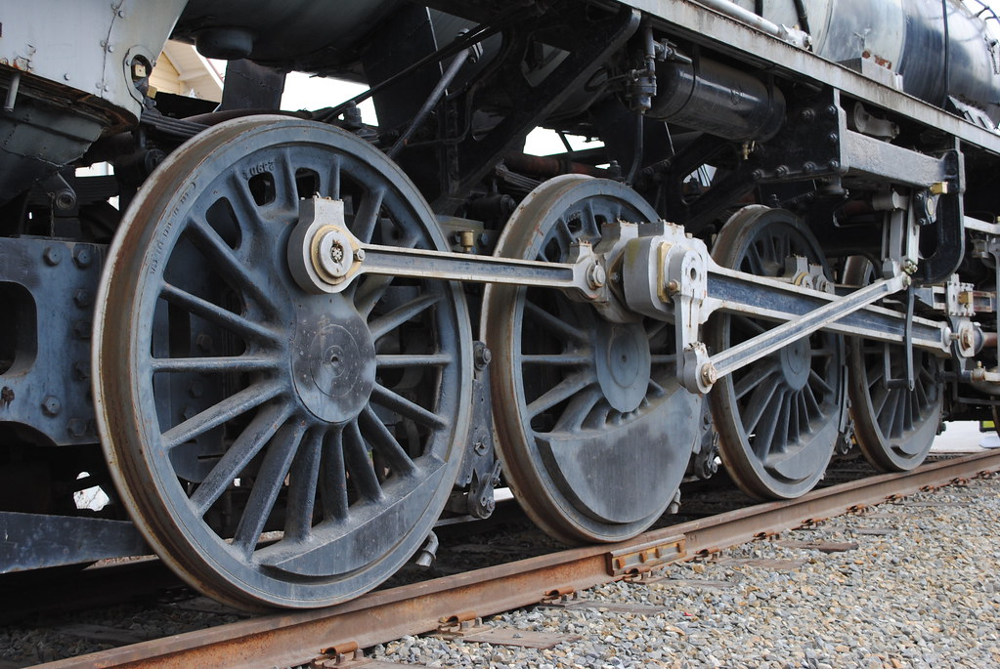
Ilustración steampunk
La última máquina capaz de mantener con vida una ciudad olvidada.
Concepto ficticio; fotografía: Steam engine wheels, Juhana Leinonen, CC BY 2.0.
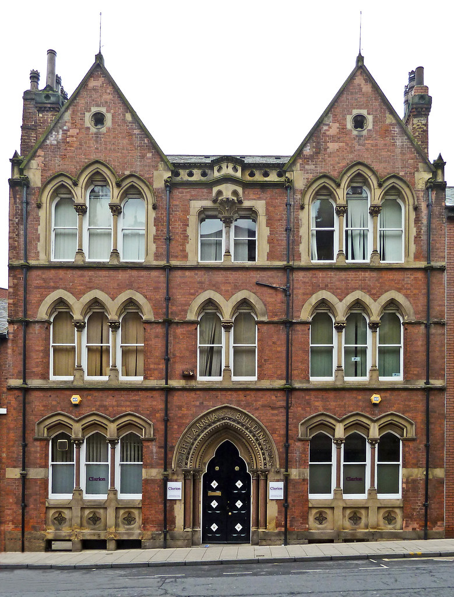
Diseño editorial
El esplendor de una civilización que se niega a desaparecer.
Concepto ficticio; fotografía: Britannia Buildings, Tim Green aka atoach, CC BY 2.0.
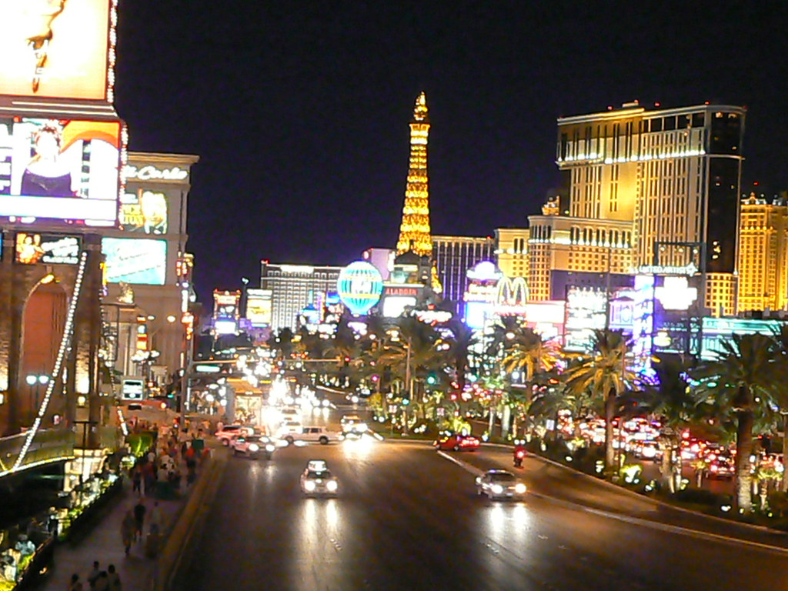
Concept art urbano
Calles inundadas de neón, humo y secretos bajo una noche interminable.
Concepto ficticio; fotografía: Night street view of Las Vegas Strip, Tim Pearce, CC BY 2.0.
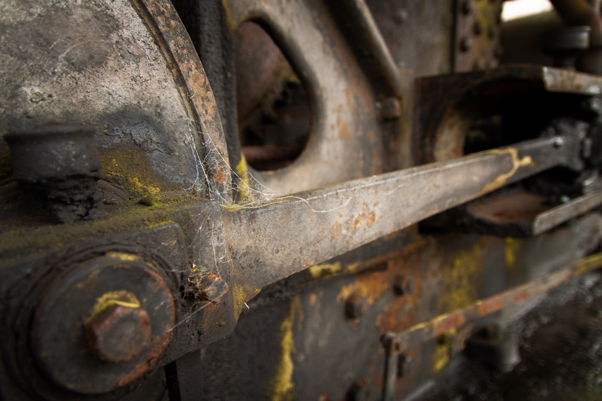
Portada de ciencia ficción
Supervivientes de un mundo gobernado por engranajes y acero.
Concepto ficticio; fotografía: Steam Donkey, LukeDetwiler, CC BY 2.0.
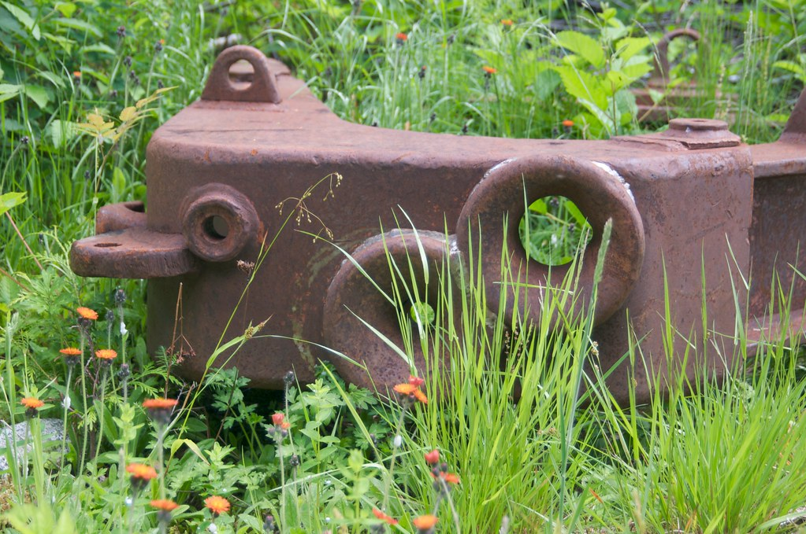
Ilustración gótica
La naturaleza recupera lentamente los restos de una civilización mecánica.
Concepto ficticio; fotografía: Abandoned in the Weeds, A.Davey, CC BY 2.0.
Colecciones y universos
Algunas ideas no caben en una sola ilustración. Estas colecciones exploran mundos imaginarios a través de diferentes piezas visuales.
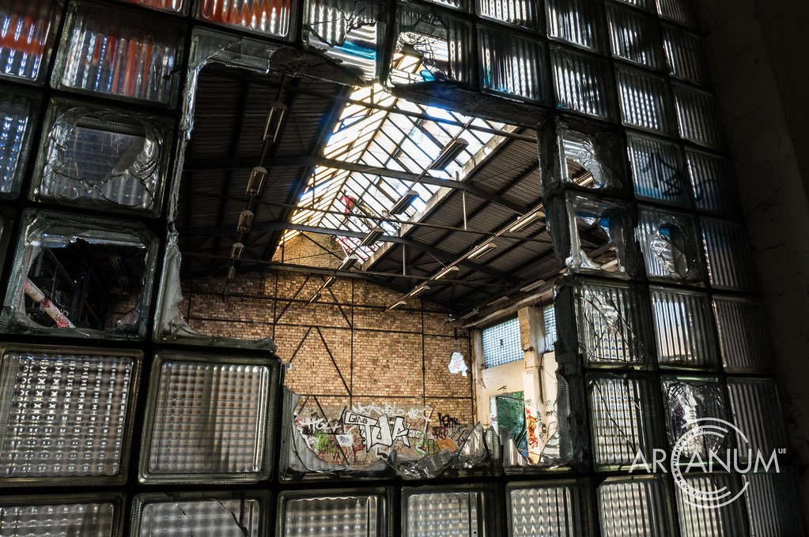
Máquinas monumentales, fábricas abandonadas y los últimos vestigios de la revolución industrial.
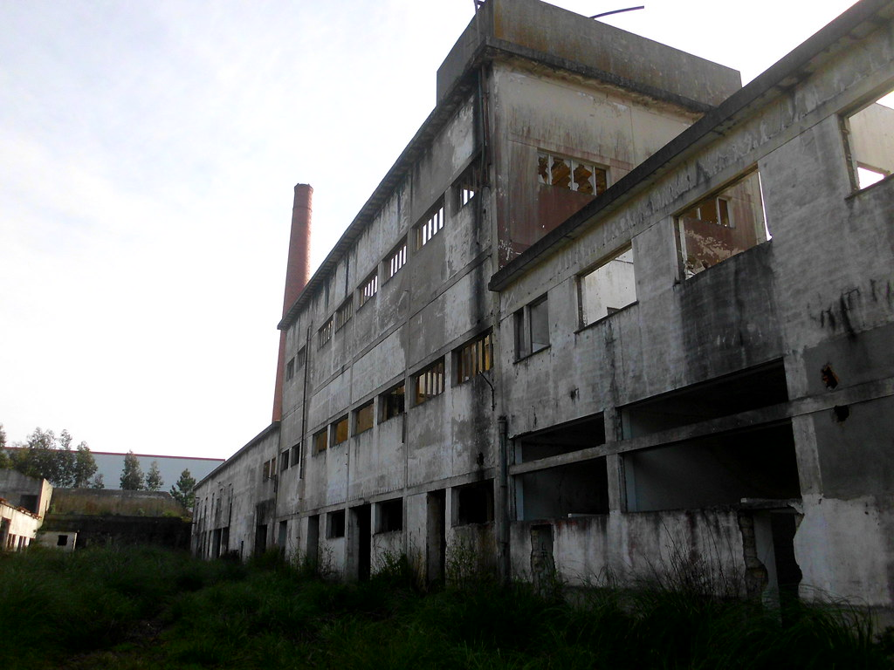
Arquitectura gótica, decadencia urbana y ciudades que siguen respirando bajo cielos contaminados.
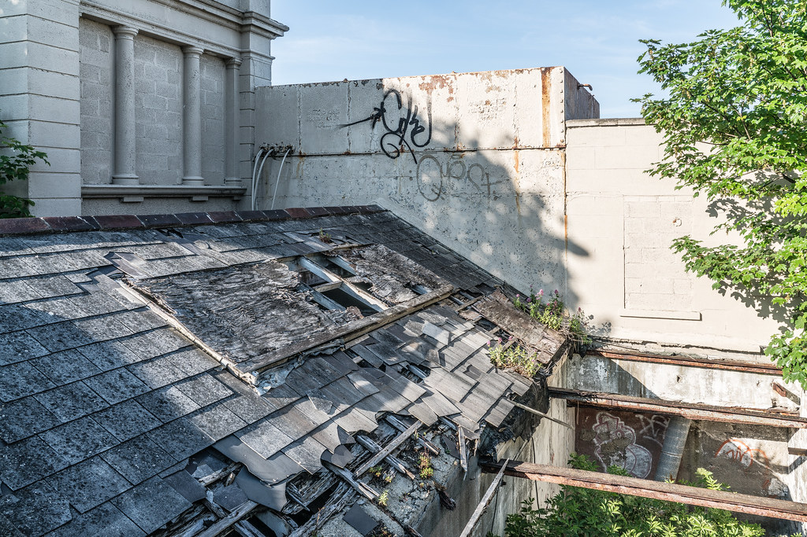
Una sociedad que ha reconstruido su identidad entre reliquias victorianas y tecnologías imposibles.
Proceso creativo
Cada proyecto comienza escuchando una historia. Mi proceso busca encontrar la imagen capaz de representar su esencia.
Conocer la historia, su atmósfera, personajes y público lector.
Construir referencias visuales, paletas cromáticas y elementos narrativos.
Explorar composiciones y desarrollar los primeros bocetos.
Convertir el concepto en una ilustración detallada y coherente.
Revisar los últimos detalles y preparar la obra para su aplicación editorial.
Anatomía de una portada
Una buena portada es mucho más que una imagen atractiva. Cada elemento debe contribuir a contar una historia.
Guiar la mirada hacia el conflicto central.
Encontrar letras que pertenezcan al universo narrativo.
Transmitir emociones mediante bronces, negros, ocres y luces artificiales.
Ocultar pequeños significados que el lector descubrirá al avanzar en la novela.
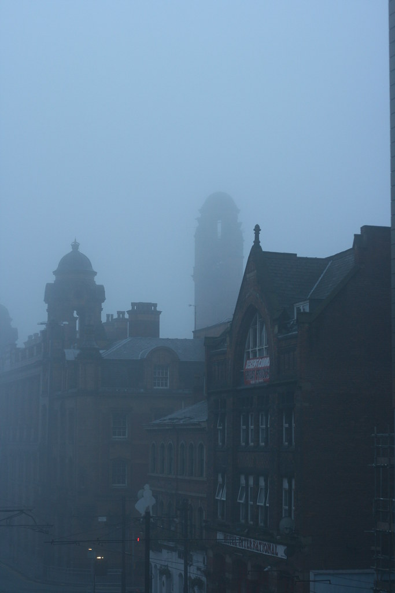
Trayectoria · La evolución de una mirada
Mi recorrido artístico nace de la fascinación por los libros ilustrados, la arquitectura histórica, el diseño editorial y los universos de ficción.
Con el tiempo, estos intereses se han combinado hasta dar forma a un lenguaje propio, donde conviven la ornamentación victoriana y la estética de las ciudades industriales abandonadas.
Actualmente, mi trabajo se centra en explorar la narrativa visual y en desarrollar proyectos de ilustración aplicados a la literatura fantástica.
Exploración del dibujo, la literatura y las referencias visuales.
Experimentación con técnicas, composición y estilos gráficos.
Desarrollo de una identidad artística enfocada en la ilustración editorial.
Colaboraciones y encargos
¿Estás escribiendo una novela y buscas una identidad visual que esté a la altura de su universo?
Trabajo propuestas gráficas para autores independientes, proyectos editoriales y creadores que desean transformar sus ideas en imágenes memorables.
Colaboro con:
Próximas presentaciones
El arte también merece salir de las páginas. Este espacio reunirá futuras exposiciones, encuentros literarios, ferias y actividades relacionadas con la ilustración.
Fecha y lugar por confirmar.
Pendiente de confirmación
Próximamente.
Pendiente de confirmación
Programación pendiente.
Pendiente de confirmación
Preguntas frecuentes
Sí. Cada propuesta se plantea según las necesidades narrativas y editoriales del proyecto.
Mi especialidad es la estética victoriana postapocalíptica, aunque puedo explorar enfoques relacionados con la fantasía oscura y la ciencia ficción.
Todo comienza con una conversación sobre la historia, sus referencias y los objetivos visuales.
Los formatos y requisitos de entrega se definirán según las necesidades de cada proyecto.
Los plazos dependen de la complejidad, el alcance y las revisiones acordadas.
Contacto · Escribamos el próximo mundo
Puede que tu próximo universo todavía exista únicamente entre las páginas de un manuscrito. Hagamos que cobre vida.
Si tienes una novela, una saga o un proyecto creativo entre manos, estaré encantado de conocerlo.
Enviar un correoCorreo provisional editable: contacto@ejemplo.com
El mundo puede terminar. Las historias, jamás.